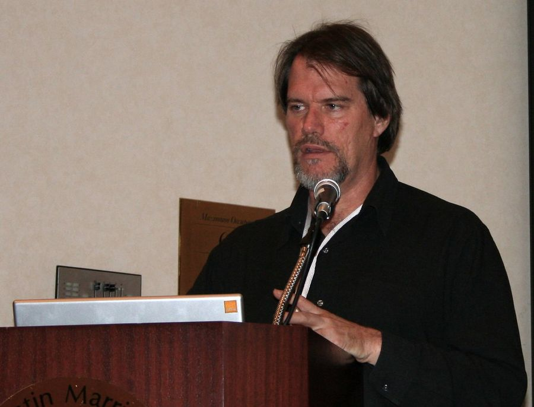

2027年：デルタ州警察本部長、職員に党派性と恐喝を警告2027: Delta CP warns officers against partisanship, extortionデルタ州警察本部長のサミュエル・エラレ氏は、2027年の選挙を前に上級職員らに非党派であるよう命じ、恐喝と汚職に対する一切の不寛容を改めて表明した。Read M
2027年：デルタ州警察本部長、職員に党派性と恐喝を警告2027: Delta CP warns officers against partisanship, extortionデルタ州警察本部長のサミュエル・エラレ氏は、2027年の選挙を前に上級職員らに非党派であるよう命じ、恐喝と汚職に対する一切の不寛容を改めて表明した。Read M メッシとロナウド、テベスの記念試合で共演の可能性Messi, Ronaldo could play together at Tevez’s testimonialカルロス・テベス氏は、リオネル・メッシが12月20日にボカのボンボネーラで行われる自身の記念試合に出場すると述べ、クリスティアーノ・ロナウドも加わると確信していると語った。続きを読む：htt
メッシとロナウド、テベスの記念試合で共演の可能性Messi, Ronaldo could play together at Tevez’s testimonialカルロス・テベス氏は、リオネル・メッシが12月20日にボカのボンボネーラで行われる自身の記念試合に出場すると述べ、クリスティアーノ・ロナウドも加わると確信していると語った。続きを読む：htt ACミラン、2点差を逆転してオリンピアコスに勝利AC Milan rally from two goals down to beat Olympiakos開幕4試合のうち3試合に敗れていたルベン・アモリム監督率いるミランは、4-2で勝利し、屈辱的な早期敗退を回避する望みを高めた
ACミラン、2点差を逆転してオリンピアコスに勝利AC Milan rally from two goals down to beat Olympiakos開幕4試合のうち3試合に敗れていたルベン・アモリム監督率いるミランは、4-2で勝利し、屈辱的な早期敗退を回避する望みを高めた 欧州：ボーンマス、セルタ・ビーゴ戦の逆転勝利で連勝を伸ばすEuropa: Bournemouth extend winning run with comeback win over Celta Vigo10人となったボーンマスは木曜日、セルタ・ビーゴに2-1で勝利し、ヨーロッパリーグでの勝率100％の記録を維持した
欧州：ボーンマス、セルタ・ビーゴ戦の逆転勝利で連勝を伸ばすEuropa: Bournemouth extend winning run with comeback win over Celta Vigo10人となったボーンマスは木曜日、セルタ・ビーゴに2-1で勝利し、ヨーロッパリーグでの勝率100％の記録を維持した 「私の就任式には来るな」、アデレケ氏がオスン州のNURTW幹部らに告げるDon’t come to my inauguration, Adeleke tells Osun NURTW leadersアデモラ・アデレケ知事は、NURTWがオショグボで開かれる自身の2期目の就任式に招待されておらず、出席する計画を阻止するよう警察に指示したと述べた。
「私の就任式には来るな」、アデレケ氏がオスン州のNURTW幹部らに告げるDon’t come to my inauguration, Adeleke tells Osun NURTW leadersアデモラ・アデレケ知事は、NURTWがオショグボで開かれる自身の2期目の就任式に招待されておらず、出席する計画を阻止するよう警察に指示したと述べた。 エボニイのNDC候補者、APCからの離党者は自身の副知事候補ではなかったと主張Ebonyi NDC candidate says APC defector was never his running mateエボニイ州のナイジェリア民主党（NDC）は、同党の副知事候補だったと主張したとされるウカ・クリス・ンドゥブイシ氏について、その主張を否定した。
エボニイのNDC候補者、APCからの離党者は自身の副知事候補ではなかったと主張Ebonyi NDC candidate says APC defector was never his running mateエボニイ州のナイジェリア民主党（NDC）は、同党の副知事候補だったと主張したとされるウカ・クリス・ンドゥブイシ氏について、その主張を否定した。 デジタル移行が放送の新時代の幕開けに――大臣Digital switch-over heralds new broadcasting era – Ministerモハメド・イドリス情報相は、デジタル移行プラットフォーム「FreeTV」がデジタルテレビへのアクセスを拡大し、ナイジェリアの地元コンテンツ制作者を後押しすると述べた。
デジタル移行が放送の新時代の幕開けに――大臣Digital switch-over heralds new broadcasting era – Ministerモハメド・イドリス情報相は、デジタル移行プラットフォーム「FreeTV」がデジタルテレビへのアクセスを拡大し、ナイジェリアの地元コンテンツ制作者を後押しすると述べた。 2027年：ティヌブ氏は再選される、野党は弱すぎる――バミデレ氏2027: Tinubu will win re-election, opposition too weak, says Bamidele上院院内総務のオペイェミ・バミデレ氏は、野党には組織基盤がないと主張し、改革が苦難をもたらしたことは認めながらも、ティヌブ氏は2027年に再選されると述べた。
2027年：ティヌブ氏は再選される、野党は弱すぎる――バミデレ氏2027: Tinubu will win re-election, opposition too weak, says Bamidele上院院内総務のオペイェミ・バミデレ氏は、野党には組織基盤がないと主張し、改革が苦難をもたらしたことは認めながらも、ティヌブ氏は2027年に再選されると述べた。 CAF女子年間最優秀若手選手賞の最終候補に選ばれたナイジェリアのオルワケミ・アデグブイを紹介Meet Nigeria’s Oluwakemi Adegbuyi Shortlisted for CAF Women’s Young Player Awardナイジェリアの10代のサッカー界の新星、オルワケミ・アデグブイは、2026年C…の最終候補に残ったことで、アフリカで最も有望な若手選手の一人として浮上した
CAF女子年間最優秀若手選手賞の最終候補に選ばれたナイジェリアのオルワケミ・アデグブイを紹介Meet Nigeria’s Oluwakemi Adegbuyi Shortlisted for CAF Women’s Young Player Awardナイジェリアの10代のサッカー界の新星、オルワケミ・アデグブイは、2026年C…の最終候補に残ったことで、アフリカで最も有望な若手選手の一人として浮上した 2027年選挙：マキンデ氏はアティク氏に屈するかもしれない。彼が私たちと共にいてほしい――ブワラ氏2027 election: Makinde may succumb to Atiku; I wish he’s with us — Bwalaブワラ氏は、ティヌブ氏の1期目を超えて大統領職を維持したいという同地域の意向があるため、マキンデ氏がアティク氏を支持すれば南部への裏切りになると述べた。
2027年選挙：マキンデ氏はアティク氏に屈するかもしれない。彼が私たちと共にいてほしい――ブワラ氏2027 election: Makinde may succumb to Atiku; I wish he’s with us — Bwalaブワラ氏は、ティヌブ氏の1期目を超えて大統領職を維持したいという同地域の意向があるため、マキンデ氏がアティク氏を支持すれば南部への裏切りになると述べた。 連邦政府、イモ州の医療保険制度で女性と子ども2万人を対象にFG targets 20,000 women, children in Imo health insurance scheme連邦政府は、脆弱な立場にある女性と子どもを優先し、加入者数2万人を目標とする母子向けのイモ州医療保険制度を開始した。
連邦政府、イモ州の医療保険制度で女性と子ども2万人を対象にFG targets 20,000 women, children in Imo health insurance scheme連邦政府は、脆弱な立場にある女性と子どもを優先し、加入者数2万人を目標とする母子向けのイモ州医療保険制度を開始した。 ナイジェリアとトーゴ、連携する2つのデータパーク開発で合意に署名Nigeria, Togo sign deal to develop twin data parksナイジェリアとトーゴは、相互に接続された2つのデータパークを開発する覚書に署名し、世界のデータセンター事業者を西アフリカに誘致するため民間投資を求めている。
ナイジェリアとトーゴ、連携する2つのデータパーク開発で合意に署名Nigeria, Togo sign deal to develop twin data parksナイジェリアとトーゴは、相互に接続された2つのデータパークを開発する覚書に署名し、世界のデータセンター事業者を西アフリカに誘致するため民間投資を求めている。 2027年：FCTの障害者たちが利用しやすい投票所を要求2027: FCT PWDs demand accessible polling unitsFCTの障害者たちは、2027年の総選挙を前に、利用しやすい投票所と保護を提供するようINECと治安機関に求めた。続きを読む：
2027年：FCTの障害者たちが利用しやすい投票所を要求2027: FCT PWDs demand accessible polling unitsFCTの障害者たちは、2027年の総選挙を前に、利用しやすい投票所と保護を提供するようINECと治安機関に求めた。続きを読む： PANDEF、警察とDSSにデルタ州の殺害事件の捜査を要請PANDEF urges police, DSS to probe Delta killingsPANDEFは、デルタ州ウゲリでの政治集会でNDC支持者が殺害されたと報じられた事件を捜査し、責任者を訴追するよう警察とDSSに求めた。続きを読む
PANDEF、警察とDSSにデルタ州の殺害事件の捜査を要請PANDEF urges police, DSS to probe Delta killingsPANDEFは、デルタ州ウゲリでの政治集会でNDC支持者が殺害されたと報じられた事件を捜査し、責任者を訴追するよう警察とDSSに求めた。続きを読む 2027年：大統領選から撤退する計画はないとマキンデ氏2027: No plan to quit presidential race, says Makindeセイ・マキンデ氏の陣営は、撤退に向けて交渉しているとの報道を否定し、APMの候補者は2027年の大統領選に全面的に臨んでいると主張した。続きを読む：https://
2027年：大統領選から撤退する計画はないとマキンデ氏2027: No plan to quit presidential race, says Makindeセイ・マキンデ氏の陣営は、撤退に向けて交渉しているとの報道を否定し、APMの候補者は2027年の大統領選に全面的に臨んでいると主張した。続きを読む：https:// イモ州APC、ウィケ氏が2027年選挙の不正操作を企てていると非難Imo APC accuses Wike of plotting to manipulate 2027 electionsイモ州の全進歩会議（APC）は、連邦首都圏担当相のニェソム・ウィケ氏が党に干渉しようとしていると非難した
イモ州APC、ウィケ氏が2027年選挙の不正操作を企てていると非難Imo APC accuses Wike of plotting to manipulate 2027 electionsイモ州の全進歩会議（APC）は、連邦首都圏担当相のニェソム・ウィケ氏が党に干渉しようとしていると非難した デルタ州、人身売買事件15件以上を起訴中 ― 当局者Delta prosecuting over 15 human trafficking cases — Officialデルタ州は、人身売買事件15件以上を起訴中だと述べ、伝統的指導者に対し、人身売買業者の摘発と子どもの保護に協力するよう求めた。続きを読む：http
デルタ州、人身売買事件15件以上を起訴中 ― 当局者Delta prosecuting over 15 human trafficking cases — Officialデルタ州は、人身売買事件15件以上を起訴中だと述べ、伝統的指導者に対し、人身売買業者の摘発と子どもの保護に協力するよう求めた。続きを読む：http トランプ氏、「偽の」米GDP統計への調査を要求Trump demands probe into ‘fake’ US GDP figuresドナルド・トランプ大統領は木曜日、根拠のない干渉の主張を繰り返す中、経済成長率の定例改定について調査を求めた
トランプ氏、「偽の」米GDP統計への調査を要求Trump demands probe into ‘fake’ US GDP figuresドナルド・トランプ大統領は木曜日、根拠のない干渉の主張を繰り返す中、経済成長率の定例改定について調査を求めた 連邦政府、2027年グラミー賞ノミネートでダヴィド、アサケらを称賛FG hails Davido, Asake, others over 2027 Grammy nominationsムサワ氏は、ナイジェリアのアーティストが最優秀グローバル・ミュージック・アルバム部門の5組の候補のうち3組を占め、5作品のうち4作品に参加していると指摘した
連邦政府、2027年グラミー賞ノミネートでダヴィド、アサケらを称賛FG hails Davido, Asake, others over 2027 Grammy nominationsムサワ氏は、ナイジェリアのアーティストが最優秀グローバル・ミュージック・アルバム部門の5組の候補のうち3組を占め、5作品のうち4作品に参加していると指摘した NUC、大学におけるイノベーションと起業家精神の促進に向けグループを設置NUC sets up group to boost innovation, entrepreneurship in varsitiesNUCとEyeCity Africaは、起業家精神、卒業生の就業能力、研究の商業化を促進するため、高等教育イノベーションワーキンググループを発足させた。続きを読む
NUC、大学におけるイノベーションと起業家精神の促進に向けグループを設置NUC sets up group to boost innovation, entrepreneurship in varsitiesNUCとEyeCity Africaは、起業家精神、卒業生の就業能力、研究の商業化を促進するため、高等教育イノベーションワーキンググループを発足させた。続きを読む 強力な嵐が米国を襲い、ニューヨークとニュージャージーが緊急事態を宣言New York, New Jersey declare emergencies as powerful storm hits US木曜日、強力な嵐が米国東海岸を襲い、祝日の行事に支障が出る中、ニューヨークとニュージャージーは非常事態を宣言した
強力な嵐が米国を襲い、ニューヨークとニュージャージーが緊急事態を宣言New York, New Jersey declare emergencies as powerful storm hits US木曜日、強力な嵐が米国東海岸を襲い、祝日の行事に支障が出る中、ニューヨークとニュージャージーは非常事態を宣言した 医療費が理由で女性が亡くなることがあってはならない――カノ州知事No woman should die over medical bills – Kano govカノ州のアッバ・ユスフ知事は、NHIAと共同で健康保険「ママ・ピキン」を開始した。脆弱な立場にある女性と5歳未満の子ども2万人が対象で、無料でプライマリ・ケアを受けられる。続きを読む
医療費が理由で女性が亡くなることがあってはならない――カノ州知事No woman should die over medical bills – Kano govカノ州のアッバ・ユスフ知事は、NHIAと共同で健康保険「ママ・ピキン」を開始した。脆弱な立場にある女性と5歳未満の子ども2万人が対象で、無料でプライマリ・ケアを受けられる。続きを読む プラトー州襲撃の犠牲者17人が集団埋葬される17 victims of Plateau attack get mass burialプラトー州バッサ地方行政区のチャンド・ズレチ共同体への襲撃で殺害された17人が、悲しみと正義を求める声の中、集団で埋葬された。続きを読む：
プラトー州襲撃の犠牲者17人が集団埋葬される17 victims of Plateau attack get mass burialプラトー州バッサ地方行政区のチャンド・ズレチ共同体への襲撃で殺害された17人が、悲しみと正義を求める声の中、集団で埋葬された。続きを読む： ナサニエル・バッセイ、ミュージシャンとスタッフ向けの補助付き住宅を建設Nathaniel Bassey builds subsidised homes for musicians, staffゴスペル歌手のナサニエル・バッセイは、自身のミュージシャンとスタッフ向けに補助付きのアパートを建設していると述べ、入居者はクリスマスまでに入居する予定だとした。続きを読む：
ナサニエル・バッセイ、ミュージシャンとスタッフ向けの補助付き住宅を建設Nathaniel Bassey builds subsidised homes for musicians, staffゴスペル歌手のナサニエル・バッセイは、自身のミュージシャンとスタッフ向けに補助付きのアパートを建設していると述べ、入居者はクリスマスまでに入居する予定だとした。続きを読む： 2027年選挙：ティヌブ氏は倒せる ― ババ・アフメド氏2027 election: Tinubu is beatable — Baba-Ahmed同氏は、選挙が信頼できるものになることを望むと述べ、独立国家選挙委員会に公平な競争の場を提供するよう求めた
2027年選挙：ティヌブ氏は倒せる ― ババ・アフメド氏2027 election: Tinubu is beatable — Baba-Ahmed同氏は、選挙が信頼できるものになることを望むと述べ、独立国家選挙委員会に公平な競争の場を提供するよう求めた ユニセフ、NGE、DAMEなどが、学校に通っていない1830万人の子どもたちへの支援を訴えるUNICEF, NGE, DAME others make case for 18.3m out-of-school children「私たちが一時的に取り組むだけでは不十分だ。毎年私たちは、子どもたちのために未来を築かなければならないと自らに言い聞かせている。私たちは十分なことをしてきただろうか？」UNIという投稿…
ユニセフ、NGE、DAMEなどが、学校に通っていない1830万人の子どもたちへの支援を訴えるUNICEF, NGE, DAME others make case for 18.3m out-of-school children「私たちが一時的に取り組むだけでは不十分だ。毎年私たちは、子どもたちのために未来を築かなければならないと自らに言い聞かせている。私たちは十分なことをしてきただろうか？」UNIという投稿… EPL：チェルシーのフォファナ、物議を醸したインタビューについて謝罪EPL: Chelsea’s Fofana apologises over controversial interviewチェルシーのウェズレイ・フォファナがYouTubeでのインタビューについて謝罪し、シャビ・アロンソは、リーズ戦での敗北後、この問題は内部で対処されたと述べた。続きを読む：
EPL：チェルシーのフォファナ、物議を醸したインタビューについて謝罪EPL: Chelsea’s Fofana apologises over controversial interviewチェルシーのウェズレイ・フォファナがYouTubeでのインタビューについて謝罪し、シャビ・アロンソは、リーズ戦での敗北後、この問題は内部で対処されたと述べた。続きを読む： 性暴力：英国とミラベル・センター、サバイバーの保護と正義の強化を訴えSexual violence: UK, Mirabel Centre push for stronger protection, justice for survivorsヘンリー・オジェル氏によると、英国とミラベル・センターは、性暴力のサバイバーに対するより強固な保護、継続的な支援、司法へのアクセスを改めて求めた。
性暴力：英国とミラベル・センター、サバイバーの保護と正義の強化を訴えSexual violence: UK, Mirabel Centre push for stronger protection, justice for survivorsヘンリー・オジェル氏によると、英国とミラベル・センターは、性暴力のサバイバーに対するより強固な保護、継続的な支援、司法へのアクセスを改めて求めた。 Pi-CNG、ドライバーに路上のCNG改造を行わないよう警告Pi-CNG warns motorists against roadside CNG conversionsPi-CNGはドライバーに対し、路上でCNG改造を行わないよう警告し、安全でない設置や車両の損傷を避けるため、認定センターを利用するよう促した。続きを読む：
Pi-CNG、ドライバーに路上のCNG改造を行わないよう警告Pi-CNG warns motorists against roadside CNG conversionsPi-CNGはドライバーに対し、路上でCNG改造を行わないよう警告し、安全でない設置や車両の損傷を避けるため、認定センターを利用するよう促した。続きを読む： 「もっと長くいてほしかった」―ンケム・オウォー、ピート・エドチーを悼む‘We wished you stayed longer’ – Nkem Owoh mourns Pete Edochieオウォー氏は、自身のInstagramページで共有した追悼文の中で、エドチー氏を親愛なる兄弟であり友人と表現し、その生き方を通して人々に人間性を信じさせた人物だと述べた
「もっと長くいてほしかった」―ンケム・オウォー、ピート・エドチーを悼む‘We wished you stayed longer’ – Nkem Owoh mourns Pete Edochieオウォー氏は、自身のInstagramページで共有した追悼文の中で、エドチー氏を親愛なる兄弟であり友人と表現し、その生き方を通して人々に人間性を信じさせた人物だと述べた
オジュク記念行事：ビアンカ、南東部の知事らを不和と対立で激しく非難Ojukwu Memorial: Bianca slams South East governors over disunity, rivalriesナイジェリアのビアンカ・オジュク外相（大使）は、イボ族の政治指導者たち、特に南東部の知事らが結束できていないとして叱責した。 スーパー・ファルコンズ：エグアボン監督、アルジェリアとの親善試合に24選手を招集Super Falcons: Eguavon invites 24 players for Algeria friendliesナイジェリアのスーパー・ファルコンズは、アルジェリアとの今後の国際親善試合に向けた24人のメンバーを発表し、ゴールキーパーのチアマカ・ナドジエとフォワード
スーパー・ファルコンズ：エグアボン監督、アルジェリアとの親善試合に24選手を招集Super Falcons: Eguavon invites 24 players for Algeria friendliesナイジェリアのスーパー・ファルコンズは、アルジェリアとの今後の国際親善試合に向けた24人のメンバーを発表し、ゴールキーパーのチアマカ・ナドジエとフォワード ファウンテン・オブ・ライフ教会、ジミー・オドゥコヤ氏に対する逮捕状を批判Fountain of Life Church faults arrest warrant against Jimmy Odukoyaファウンテン・オブ・ライフ教会は、同教会の主任牧師ジミー・オドゥコヤ氏に対するベンチ・ワラントの発付を批判し、同氏には差止命令が送達されていなかったと主張した
ファウンテン・オブ・ライフ教会、ジミー・オドゥコヤ氏に対する逮捕状を批判Fountain of Life Church faults arrest warrant against Jimmy Odukoyaファウンテン・オブ・ライフ教会は、同教会の主任牧師ジミー・オドゥコヤ氏に対するベンチ・ワラントの発付を批判し、同氏には差止命令が送達されていなかったと主張した 2027年：アティクとアマエチが最も優れた統治経験を持つ ― モモドゥ氏2027: Atiku, Amaechi have best governance experience – MomoduADCのデレ・モモドゥ氏は、アティクとアマエチが2027年に向けて最も優れた統治経験を持ち、アティクは専門家らとともにアジャオクタ・スチールを復活させることができると述べた。続きを読む：h
2027年：アティクとアマエチが最も優れた統治経験を持つ ― モモドゥ氏2027: Atiku, Amaechi have best governance experience – MomoduADCのデレ・モモドゥ氏は、アティクとアマエチが2027年に向けて最も優れた統治経験を持ち、アティクは専門家らとともにアジャオクタ・スチールを復活させることができると述べた。続きを読む：h トランプ氏、プーチン氏に欧州での軍事侵略を終わらせるよう促すTrump urges Putin to end military aggression in Europeトランプ氏は、プーチン氏に欧州でのあらゆる軍事侵略を後退させるよう求めたと述べた。これは、先週中国でロシアの指導者を自身の友人と呼んだ後の論調の変化である。続きを読む
トランプ氏、プーチン氏に欧州での軍事侵略を終わらせるよう促すTrump urges Putin to end military aggression in Europeトランプ氏は、プーチン氏に欧州でのあらゆる軍事侵略を後退させるよう求めたと述べた。これは、先週中国でロシアの指導者を自身の友人と呼んだ後の論調の変化である。続きを読む 2027年：マキンデ氏は大統領選から撤退しない――選挙陣営2027: Makinde won’t step down from presidential race — Campaignマキンデ＝ダウラ大統領選挙運動組織（MDPCO）は、オヨ州知事のセイ・マキンデ氏が別の大統領候補と交渉しているとの報道を退けた
2027年：マキンデ氏は大統領選から撤退しない――選挙陣営2027: Makinde won’t step down from presidential race — Campaignマキンデ＝ダウラ大統領選挙運動組織（MDPCO）は、オヨ州知事のセイ・マキンデ氏が別の大統領候補と交渉しているとの報道を退けた NDCは大規模な不正への動員に「rig and die」のスローガンを使用している ― ケヤモ氏NDC using ‘rig and die’ slogan to mobilise for mass rigging – Keyamoオメイザ・アジャイ筆、アブジャ発：航空・航空宇宙開発相のフェスタス・ケヤモ氏（SAN）は、ナイジェリア民主会議（NDC）が「rig」を使用していると非難した
NDCは大規模な不正への動員に「rig and die」のスローガンを使用している ― ケヤモ氏NDC using ‘rig and die’ slogan to mobilise for mass rigging – Keyamoオメイザ・アジャイ筆、アブジャ発：航空・航空宇宙開発相のフェスタス・ケヤモ氏（SAN）は、ナイジェリア民主会議（NDC）が「rig」を使用していると非難した オーバメヤン、バルセロナ戦を前に自動車事故もけがなしAubameyang escapes injury in car crash ahead of Barcelona clashデポルティボ・ラ・コルーニャのストライカー、ピエール＝エメリク・オーバメヤンは、…へ向けて運転中に自身の車が別の車両と衝突したが、無傷だった
オーバメヤン、バルセロナ戦を前に自動車事故もけがなしAubameyang escapes injury in car crash ahead of Barcelona clashデポルティボ・ラ・コルーニャのストライカー、ピエール＝エメリク・オーバメヤンは、…へ向けて運転中に自身の車が別の車両と衝突したが、無傷だった 海軍、リバーズ州で違法製油所4カ所を解体、112,525リットルを回収Navy dismantles four illegal refineries, recovers 112,525 litres in Riversキングズリー・オモノビ記：ナイジェリア海軍は違法な精製施設4カ所を解体し、盗まれたとみられる原油と違法な…約112,525リットルを発見した
海軍、リバーズ州で違法製油所4カ所を解体、112,525リットルを回収Navy dismantles four illegal refineries, recovers 112,525 litres in Riversキングズリー・オモノビ記：ナイジェリア海軍は違法な精製施設4カ所を解体し、盗まれたとみられる原油と違法な…約112,525リットルを発見した フォファナ、無許可のインタビューについて謝罪。アロンソは問題は終わったと発言Fofana apologises over unauthorised interview; Alonso says issue is closed金曜日に行われるプレミアリーグのノッティンガム・フォレスト戦を前にした試合前記者会見で、アロンソは、この件には対処済みだと述べ、フォファナは……
フォファナ、無許可のインタビューについて謝罪。アロンソは問題は終わったと発言Fofana apologises over unauthorised interview; Alonso says issue is closed金曜日に行われるプレミアリーグのノッティンガム・フォレスト戦を前にした試合前記者会見で、アロンソは、この件には対処済みだと述べ、フォファナは…… 元BBC解説者のスターマー＝スミス氏が81歳で死去Ex-BBC commentator Starmer-Smith dies aged 81息子のチャーリーは木曜日、ソーシャルメディアへの投稿で死去を発表し、「今朝、安らかに亡くなった」と述べた。投稿 元BBC解説者スター…
元BBC解説者のスターマー＝スミス氏が81歳で死去Ex-BBC commentator Starmer-Smith dies aged 81息子のチャーリーは木曜日、ソーシャルメディアへの投稿で死去を発表し、「今朝、安らかに亡くなった」と述べた。投稿 元BBC解説者スター… リバプール戦でヨロに提示されたレッドカードが取り消された理由 ― FA審査会Why Yoro’s red card against Liverpool was overturned – FA panelイングランドサッカー協会は、審判機関が……にもかかわらず、マンチェスター・ユナイテッドのレニー・ヨロがリバプール戦で受けたレッドカードを取り消した理由を文書で公表した
リバプール戦でヨロに提示されたレッドカードが取り消された理由 ― FA審査会Why Yoro’s red card against Liverpool was overturned – FA panelイングランドサッカー協会は、審判機関が……にもかかわらず、マンチェスター・ユナイテッドのレニー・ヨロがリバプール戦で受けたレッドカードを取り消した理由を文書で公表した 2027年選挙：アティク氏とアマエチ氏が統治経験で最も優れている ― デレ・モモドゥ氏2027 election: Atiku, Amaechi have best experience in governance — Dele Momoduモモドゥ氏はアティク氏の指導力を信じていると述べ、その理由としてビジネスでの成功や、困難な国家課題に対処するために専門知識を活用する意欲を挙げた…
2027年選挙：アティク氏とアマエチ氏が統治経験で最も優れている ― デレ・モモドゥ氏2027 election: Atiku, Amaechi have best experience in governance — Dele Momoduモモドゥ氏はアティク氏の指導力を信じていると述べ、その理由としてビジネスでの成功や、困難な国家課題に対処するために専門知識を活用する意欲を挙げた… APCの改革メッセージをナイジェリア国民に伝えよ：ファショラ氏が党員に語るTake APC’s reform message to Nigerians: Fashola tells party members「あなたの力には銃やその他のいかなる形の武力も必要ありません。あなたが自由に選択し、国民にメッセージを伝えることが求められるのです」と彼は
APCの改革メッセージをナイジェリア国民に伝えよ：ファショラ氏が党員に語るTake APC’s reform message to Nigerians: Fashola tells party members「あなたの力には銃やその他のいかなる形の武力も必要ありません。あなたが自由に選択し、国民にメッセージを伝えることが求められるのです」と彼は ファブレガス、バルセロナ復帰説を打ち消し、当面の将来はコモに捧げると表明Fàbregas plays down Barcelona return, pledges immediate future to Comoセスク・ファブレガスは、監督としてバルセロナに復帰するとの憶測を軽視し、コモで成長を続けたいとし、現在の仕事に集中していると述べた。
ファブレガス、バルセロナ復帰説を打ち消し、当面の将来はコモに捧げると表明Fàbregas plays down Barcelona return, pledges immediate future to Comoセスク・ファブレガスは、監督としてバルセロナに復帰するとの憶測を軽視し、コモで成長を続けたいとし、現在の仕事に集中していると述べた。 CAFが女子年間最優秀選手賞の候補を5人に絞る、全リストFull list as CAF shortlist 5 for Women’s Player of the Year awardアフリカサッカー連盟（CAF）は、2026年女子年間最優秀選手賞の最終候補5人を発表し、その中にはマラウイ出身の姉妹、タビサとテムワ・チャ…が含まれている
CAFが女子年間最優秀選手賞の候補を5人に絞る、全リストFull list as CAF shortlist 5 for Women’s Player of the Year awardアフリカサッカー連盟（CAF）は、2026年女子年間最優秀選手賞の最終候補5人を発表し、その中にはマラウイ出身の姉妹、タビサとテムワ・チャ…が含まれている 2027年：有権者、INEC、政党などを保護する――連邦政府2027: We’ll protect voters, INEC, parties, others — FG連邦政府は、2027年の総選挙の前、最中、後に、有権者、政治家、選挙関係者、政党に十分な保護を確保すると保証した。
2027年：有権者、INEC、政党などを保護する――連邦政府2027: We’ll protect voters, INEC, parties, others — FG連邦政府は、2027年の総選挙の前、最中、後に、有権者、政治家、選挙関係者、政党に十分な保護を確保すると保証した。 アティク氏は貧困を選挙運動に利用、オビ氏はSNSのアルゴリズム頼み ― ブワラ氏Atiku weaponises poverty for campaign; Obi runs social media algorithm — Bwalaブワラ氏はまた、北部におけるアティク氏の政治的基盤に疑問を呈し、元副大統領が同地域でどのような支持体制を持っているのか、特に党が…と問いかけた。
アティク氏は貧困を選挙運動に利用、オビ氏はSNSのアルゴリズム頼み ― ブワラ氏Atiku weaponises poverty for campaign; Obi runs social media algorithm — Bwalaブワラ氏はまた、北部におけるアティク氏の政治的基盤に疑問を呈し、元副大統領が同地域でどのような支持体制を持っているのか、特に党が…と問いかけた。 「言葉が出ない」――ユル・エドチエ、亡き父を悼む‘Words fail me’ – Yul Edochie mourns late fatherノリウッド俳優のユル・エドチエは、ベテラン俳優である父ピート・エドチエの死後、沈黙を破り、悲しみを表す言葉が見つからないと述べた
「言葉が出ない」――ユル・エドチエ、亡き父を悼む‘Words fail me’ – Yul Edochie mourns late fatherノリウッド俳優のユル・エドチエは、ベテラン俳優である父ピート・エドチエの死後、沈黙を破り、悲しみを表す言葉が見つからないと述べた 「ミスター・ラテン」、8年を経てTAMPAN会長職を後任に引き継ぐMr Latin hands over TAMPAN presidency after eight yearsアムサン氏は移行式典で、協会の指導権を後継者のアジャラ・ジャリンゴ氏に引き継ぎ、そのことを自身のインスタグラムへの投稿で発表した。
「ミスター・ラテン」、8年を経てTAMPAN会長職を後任に引き継ぐMr Latin hands over TAMPAN presidency after eight yearsアムサン氏は移行式典で、協会の指導権を後継者のアジャラ・ジャリンゴ氏に引き継ぎ、そのことを自身のインスタグラムへの投稿で発表した。 イヤボ・オジョ、拡散した握手動画をめぐり謝罪Iyabo Ojo apologises over viral handshake video「正直に言って、不快な思いをさせたのであれば大変申し訳ありません。彼の王位や文化を軽んじるつもりはありませんでした。今後は十分に気をつけます」と彼女は述べた。投稿は
イヤボ・オジョ、拡散した握手動画をめぐり謝罪Iyabo Ojo apologises over viral handshake video「正直に言って、不快な思いをさせたのであれば大変申し訳ありません。彼の王位や文化を軽んじるつもりはありませんでした。今後は十分に気をつけます」と彼女は述べた。投稿は レワネ氏、4.5％の成長を予測し、投資家に戦略の見直しを促すRewane projects 4.5% growth, urges investors to rethink strategies執筆：オノメ・オニエメ フィナンシャル・デリバティブズ・カンパニーの最高経営責任者（CEO）ビスマルク・レワネ氏は、ナイジェリアの経済成長率を4.3～4.5％と予測した
レワネ氏、4.5％の成長を予測し、投資家に戦略の見直しを促すRewane projects 4.5% growth, urges investors to rethink strategies執筆：オノメ・オニエメ フィナンシャル・デリバティブズ・カンパニーの最高経営責任者（CEO）ビスマルク・レワネ氏は、ナイジェリアの経済成長率を4.3～4.5％と予測した CBN、BDCのドル現金限度額を週100万ドルに引き上げCBN raises BDC’s dollar cash limit to $1m weekly需要に応えるため、銀行は中央銀行からドル現金を受け取る ババジデ・コモラフェ記者 ナイジェリア中央銀行（CBN）は週間のドル現金を一時的に引き上げ…
CBN、BDCのドル現金限度額を週100万ドルに引き上げCBN raises BDC’s dollar cash limit to $1m weekly需要に応えるため、銀行は中央銀行からドル現金を受け取る ババジデ・コモラフェ記者 ナイジェリア中央銀行（CBN）は週間のドル現金を一時的に引き上げ… ウドゥエレ：「彼らの犠牲は無駄にはならない」——オビ氏とクワンクワソ氏、殺害されたNDCメンバーの家族を訪問Uduere: ‘Their sacrifices won’t be in vain’ – Obi, Kwankwaso visit slain NDC members’ familiesオビ氏は、政治的地位に就くことを望んで殺人に及ぶ人がいることは憂慮すべきことだと述べ、遺族を安心させた 投稿「Udu…」
ウドゥエレ：「彼らの犠牲は無駄にはならない」——オビ氏とクワンクワソ氏、殺害されたNDCメンバーの家族を訪問Uduere: ‘Their sacrifices won’t be in vain’ – Obi, Kwankwaso visit slain NDC members’ familiesオビ氏は、政治的地位に就くことを望んで殺人に及ぶ人がいることは憂慮すべきことだと述べ、遺族を安心させた 投稿「Udu…」 登録有権者は現在1億人、アムピタンINEC委員長が語るRegistered voters now 100m, says Amupitan, INEC Chairman「ですから、重複がある場合も、1つの名前、同じ写真で5件の登録がある場合も、そうした数字はすべて対処しました」 投稿「登録有権者は現在…」
登録有権者は現在1億人、アムピタンINEC委員長が語るRegistered voters now 100m, says Amupitan, INEC Chairman「ですから、重複がある場合も、1つの名前、同じ写真で5件の登録がある場合も、そうした数字はすべて対処しました」 投稿「登録有権者は現在…」 暴漢がベニンでNDCの車列と選挙事務所を襲撃；「我々は暴力を支持しない」——APCThugs attack NDC convoy, campaign office in Benin; ‘We don’t support violence’ – APCNDCは、ピーター・オビ氏が支持者に演説する予定だったベニンでのタウンホールミーティングで起こりうる襲撃に関する情報報告を受け取ったと述べた 投稿…2027年：誤りの余地なし、INECがRECに警告、6つの運用上の優先事項を設定2027: No margin for error, INEC warns RECs, sets 6 operational prioritiesオメイザ・アジャイ記者 アブジャ：独立国家選挙委員会（INEC）のジョアシュ・アムピタン委員長（SAN）は、常駐選挙委員（REC）らに…
暴漢がベニンでNDCの車列と選挙事務所を襲撃；「我々は暴力を支持しない」——APCThugs attack NDC convoy, campaign office in Benin; ‘We don’t support violence’ – APCNDCは、ピーター・オビ氏が支持者に演説する予定だったベニンでのタウンホールミーティングで起こりうる襲撃に関する情報報告を受け取ったと述べた 投稿…2027年：誤りの余地なし、INECがRECに警告、6つの運用上の優先事項を設定2027: No margin for error, INEC warns RECs, sets 6 operational prioritiesオメイザ・アジャイ記者 アブジャ：独立国家選挙委員会（INEC）のジョアシュ・アムピタン委員長（SAN）は、常駐選挙委員（REC）らに… 保険会社は資本増強にとどまらず革新を受け入れなければならない――ラワルInsurers must embrace innovation beyond recapitalisation — Lawalエリザベス・アデグベサン著 コンチネンタル・リーインシュアランス（Continental Reinsurance Plc）のマネージング・ディレクター／最高経営責任者であるファタイ・カヨデ・ラワル博士は、ナイジェリアの保険事業者に
保険会社は資本増強にとどまらず革新を受け入れなければならない――ラワルInsurers must embrace innovation beyond recapitalisation — Lawalエリザベス・アデグベサン著 コンチネンタル・リーインシュアランス（Continental Reinsurance Plc）のマネージング・ディレクター／最高経営責任者であるファタイ・カヨデ・ラワル博士は、ナイジェリアの保険事業者に NAICOMと消防局、強制保険の実施で提携NAICOM, Fire Service partner to implement compulsory insuranceローズマリー・イウンゼ著 国家保険委員会（NAICOM）は、連邦消防局（FFS）と提携し、ナイジェリア保険の
NAICOMと消防局、強制保険の実施で提携NAICOM, Fire Service partner to implement compulsory insuranceローズマリー・イウンゼ著 国家保険委員会（NAICOM）は、連邦消防局（FFS）と提携し、ナイジェリア保険の Moniepoint、フィッシング詐欺対策で銀行と顧客を結集Moniepoint mobilises banks, customers against phishing scamsMoniepointマイクロファイナンス銀行（Moniepoint MFB）は、増加するフィッシング詐欺を抑制するため、金融機関と消費者の結束を呼びかけた。ナイジェリアが← トップページへ戻る
Moniepoint、フィッシング詐欺対策で銀行と顧客を結集Moniepoint mobilises banks, customers against phishing scamsMoniepointマイクロファイナンス銀行（Moniepoint MFB）は、増加するフィッシング詐欺を抑制するため、金融機関と消費者の結束を呼びかけた。ナイジェリアが← トップページへ戻る